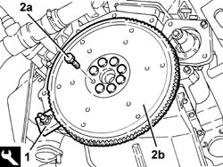

1024B20 engine flywheel - r + r for versions with automatic transmission
- Path
- Procedures > 10 ENGINE > 1024 CRANKSHAFT AND FLYWHEEL > 1024B engine flywheel > 1024B20 engine flywheel - r + r for versions with automatic transmission
- Kind
- repair procedure (removal / refitting; the operation number is the code)
- Applies to
- engines: 2.5 V6; all production periods
- Interactive page
- https://sloeber94.github.io/elrnDB-a156/en/#/3237484
Applies to: engines: 2.5 V6; all production periods; only with equipment: Q-System
 Removing
Removing
 Refitting
Refitting4450B12 front or rear wheels (two) - r+r .
7055B54 under-engine guard - r r .
7055A43 central front grille - r r .
7055A41 RIGHT FRONT GRILLE - R.R. (Left and right).
7055B42 Additional FRONT WHEEL ARCH (one), left or right - R.R. (Left).
2130A10 automatic transmission - r + r .
1. Fit the flywheel lock.
 | Name | Country |
|---|---|---|
1 | Counter-torque | 1.860.771.000 |
2. Undo the bolts (2a) and remove the engine flywheel (2b).

Applies to: engines: 2.5 V6; all production periods; only with equipment: Q-System
Refitting
RemovingFit the engine flywheel and fix it tightening the bolts to the recommended torque.
 | Fastening | Component | Ø | Value (daNm) |
|---|---|---|---|---|
- | Bolt | FLYWHEEL | M12 | Crankshaft side 13.7 - 15.1 |
Remove the flywheel lock.
| Name | Country |
|---|---|---|
- | Counter-torque | 1.860.771.000 |
2130A10 automatic transmission - r + r .
2130A04 Automatic transmission FLUID - Check level and top up, .if necessary .
7055B42 Additional FRONT WHEEL ARCH (one), left or right - R.R. (Left).
7055A41 RIGHT FRONT GRILLE - R.R. (Left and right).
7055A43 central front grille - r r .
Topics linked from this page (8)
- 2130A04 Automatic transmission FLUID - Check level and top up, .if necessary
- 2130A10 automatic transmission - r + r
- 4450B12 front or rear wheels (two) - r+r
- 7055A41 RIGHT FRONT GRILLE - R.R.
- 7055A43 central front grille - r r
- 7055B10 Front BUMPER - R.R.
- 7055B42 Additional FRONT WHEEL ARCH (one), left or right - R.R.
- 7055B54 under-engine guard - r r